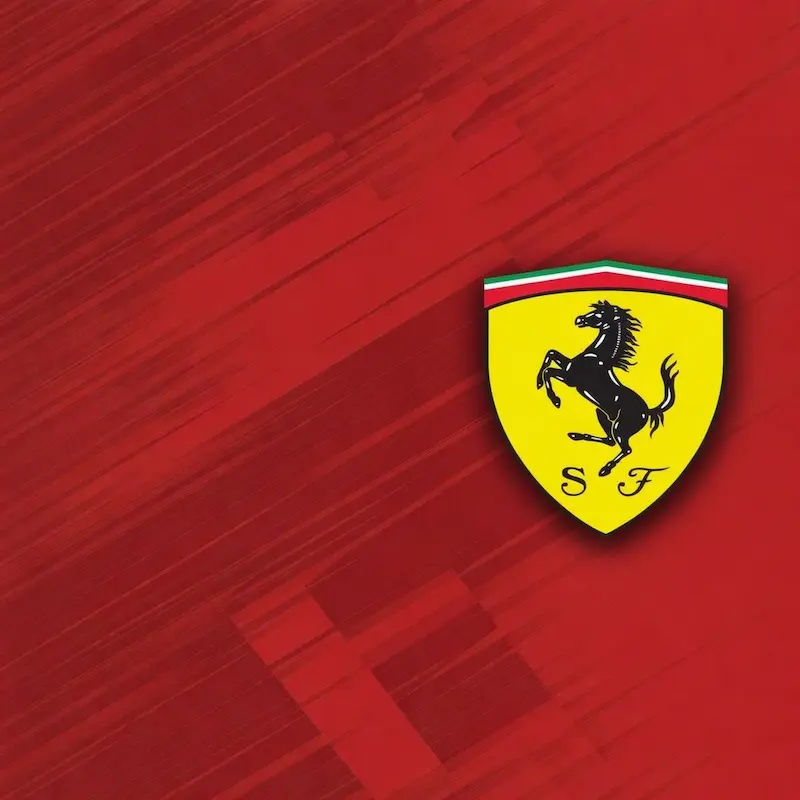

F1XL history
Team histories
Titles and recorded team statistics, season by season.
Connecting to the season archive…

F1XL constructor archive
Ferrari
Historical constructor records
—Overall titles
—Division titles
Constructor titles
Team principals
Completed seasons. Expand a season for its division breakdown.
Overall constructors
Division constructors
All Star Race
ASR team honours are recorded separately and do not contribute to the racing totals above.
Team principals
Names and seasons from the team rosters, where recorded. A gap does not imply the same person remained in charge.
About these records
- Titles and runners-up come from confirmed constructor honours. Driver and team-principal awards are not counted again as team titles.
- Team points and race figures follow the team recorded in each season’s division workbook, not a driver’s current team.
- Early honours and championship points are retained where known. Detailed team race figures before S10 are unavailable. Some S14 and S15 divisions also have incomplete original sessions; team pole attribution is unavailable for S11–S12.
- Only available figures contribute to the recorded totals. A dash means unknown, not zero. Championship points retain sprint points and official adjustments; feature points exclude sprint points wherever that split is recorded.
- Historical team names are separate: Renault and Alpine, for example, have their own records. Confirmed spelling variants such as McLaren/mclaren are combined.
- Previous principals come from explicit team-owner entries in Past Season Teams. Newer seasons use their own principal list. Badges are removed; names are kept as recorded, without guessing driver aliases or filling gaps.
- Choose Refresh records to reread the public sources. Archived data is cached in this browser to speed up later visits; current-season figures refresh more often.